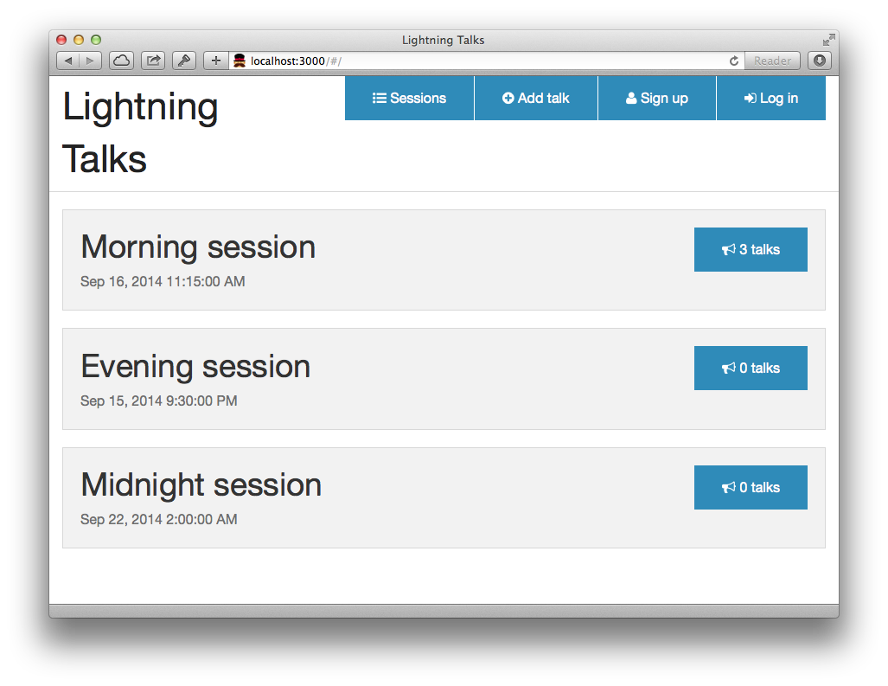
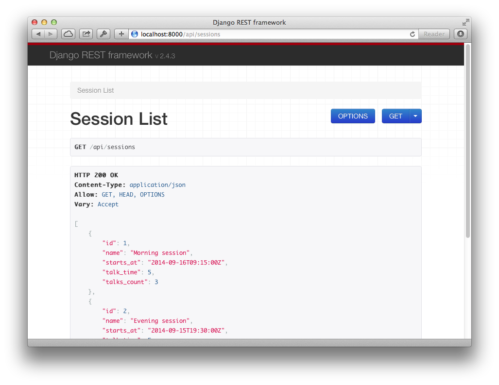

After running gulp command browser should be opened and you should see a session
list, similar to the one from Figure 1.

Let's have a look at (simplified) Angular application definition.
angular.module('lightningtalks', ['ngRoute'])
.config(function ($routeProvider, $httpProvider) {
$routeProvider
.when('/', {
templateUrl: 'partials/sessions/session-list.html',
controller: 'SessionListCtrl'
});
What's important here is $routeProvider.when method. We can seee that / url
is bound to the session-list.html template and is handled by SessionListCtrl.
We will describe briefly what's going on on a template.
Here is our session-list.html template's content (again, simplified):
<div class="sessions">
<ul class="sessions__list">
<li class="sessions__item" ng-repeat="session in sessions">
<h2>{{ session.name }}</h2>
</li>
</ul>
</div>
Note that cryptic ng-repeat="session in sessions" attribute declaration at
the li element. It means that li element should be repeated for each item
within sessions object. We might assume that this object is an array of
session objects.
Tip: Angular provides some helpers to get the scope of an HTML element. You can open developer tools in your browser and type into console:
angular.element('.sessions__list').scope()to see a Javascript object that is bound to the element.
But how was that sessions set on the scope?
Firstly let us have a look at the controller's code:
angular.module('lightningtalks')
.controller('SessionListCtrl', function ($scope, Session) {
$scope.sessions = Session.query();
});
Actually, there is not much going on here. In fact, our controller is
responsible only for setting sessions object at the $scope. So our
sessions is the result of the Session.query() method call. And the
Session object is an custom service which defines the model.
In our example model is a result of the API endpoint call. AngularJS provides
low level $http object for communication over HTTP, however it also gives us
a nice API resources wrapper. At session-service.js file we can see something
similar to:
angular.module('lightningtalks')
.service('Session', function ($resource) {
return $resource('http://localhost:8000/api/sessions/:id');
});
With that service definition we can use Session object and it's methods to
talk with our API server.
We already know how the frontend works so now is the time for the API backing our application. We use Django Rest Framework for creating API endpoints.

At lightningtalks/urls.py we can find how URLs are handled.
from django.conf.urls import patterns
from django.conf.urls import url
from talks import views as talks_views
urlpatterns = patterns('',
url(r'^api/sessions$', talks_views.SessionListView.as_view()),
)
From the above code we can see that calls to the /api/sessions are handled by
the SessionListView.
Let's have a look at the code first.
from .models import Session
from .serializers import SessionListSerializer
from rest_framework import generics
class SessionListView(generics.ListAPIView):
model = Session
serializer_class = SessionListSerializer
These few lines tell us that SessionListView operates on Session model and
uses SessionListSerializer for managing (de)serialization.
Note that our view extends more generic
ListAPIView. Read more here: http://www.django-rest-framework.org/api-guide/generic-views#listmodelmixin
Our Session model is pretty simple. Table should store the information on the
session name and start time. In addition we want to store information on how
long each talk should be (with default value of 5 minutes).
from django.db import models
class Session(models.Model):
name = models.CharField(max_length=64, default='Lightning Talks')
starts_at = models.DateTimeField()
talk_time = models.PositiveSmallIntegerField(default=5)
Hint: Django automatically adds a primary key field under
idattribute if we don't specify any.
Serialization is the heart of the API: it tells which objects should be
transformed into what. Our serializer must fetch Session objects from the
database and return proper data that would be then transformed into JSON.
from . import models import
from rest_framework import serializers
class SessionListSerializer(serializers.ModelSerializer):
talks_count = serializers.Field(source='talks.count')
class Meta:
model = models.Session
fields = (
'id',
'name',
'starts_at',
'talk_time',
'talks_count',
)
As Django Rest Framework can introspect Django models, we don't need to write
the serialization code. We are defining list of fields that should be
returned by the serializer, though. In addition, we define our own field for
the serializer. Note that talks_count is a name of the serializer field, not
model field. It however points to the model's source field (talks.count).
Source fields might be simple attributes or methods.